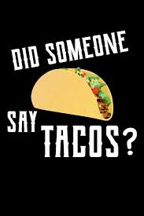

Tacos recipe
These delicious meal is perfect for taco Tuesday with the family or friends

- 8 Taco Shells
- 1 pound hamburger
- 3/4 cup water
- 1 medium onion, chopped (about 1/2 cup)
- 2 tablespoons chili powder
- 1 teaspoon salt
- 1/2 teaspoon ground cumin
- 1 clove garlic, crushed
- 1 medium onion, chopped
- 1 cup of shredded lettuce
- 1 cup of shredded cheddar cheese
- 1 large tomato, chopped
- 1/2 cup dairy sour cream
Instructions
- Cook and stir hamburger in 10-inch skillet until light brown; drain
- Stir in water, '2 cup onion, the chili powder, salt, cumin and garlic
- Heat to boiling; reduce heat
- Simmer uncovered, stirring occasionally, until thickened, about 10 minutes
- Spoon about % cup hamburger mixture into each shell
- Top with shredded lettuce, chopped onion, shredded cheese, chopped tomato and sour cream